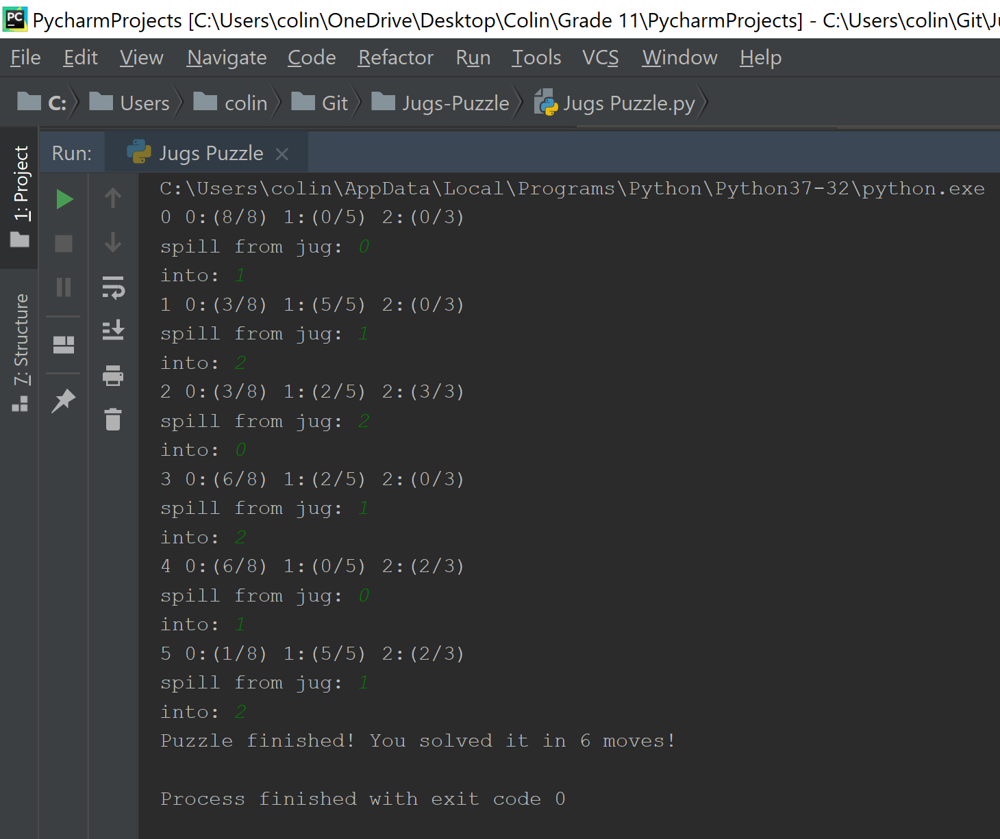
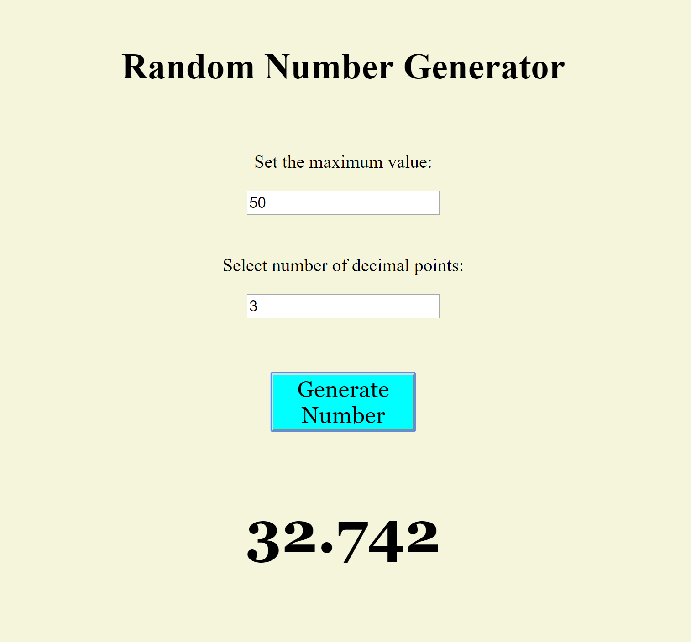

Date Created: October 25, 2017
Programming Languages and Techniques Used:
I found myself stumped one day over a simple puzzle: If I have a 3L, 5L and an 8L jug, how can I measure 4L of water in the least possible pours. I ponderd over this and decided to simulate this game in Python. I denoted the jugs as 0, 1, 2 and made a program to take user input and display the jug volumes after each pour.
The console displays which move the user is on followed by each jug capacity. Each move asks the user to input which jug to spill from and which jug to spill into. The loop is broken when one of the jugs has a capacity of 4L.
Date Created: February 6, 2019
Programming Languages and Techniques Used:
To first learn about integrating JavaScript into web applications, I created a simple program. The UI is very simple, including 2 forms, a submit button and a display. It is linked to a Vanilla JavaScript file which is called on click of the button. It returns a random number less than the set maximum and with the specified number of decimal points. This incorporates function calls from a UI and form handling in a simple utility.
